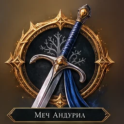
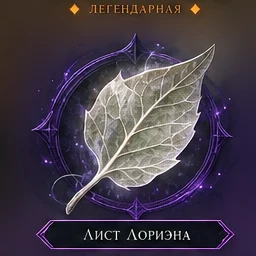

Сезон III · Битва за Эдорас
Полная сводка битвы
Битва идёт02:14:32 до завершения окна
R
Атакующий клан
248Rohan
Riders of Rohan
VS
Общий счёт войны
52% преимущества у Rohan
231
Защищающий клан
GGondor
Stewards of the White City
ТерриторияЭдорас
ФорматBO5 · 6×6
Награда180 влияния
Статус землиОспаривается
Матчей сыграно4 / 5
Участники12 / 12
Состав Rohan
Участники войны
01
YukioКапитан · ELO 2156
3–1+6802
EomerОфицер · ELO 1988
2–1+4103
TheodenОфицер · ELO 1822
2–2+1804
EowynИгрок · ELO 1746
2–1+2705
HamaИгрок · ELO 1603
1–2-806
ErkenbrandИгрок · ELO 1558
1–1+6Состав Gondor
Участники войны
01
AragornКапитан · ELO 1944
3–1+5202
ElessarОфицер · ELO 1856
2–2+1203
BoromirОфицер · ELO 1819
2–1+2504
FaramirИгрок · ELO 1788
1–2-905
ImrahilИгрок · ELO 1764
2–2+406
BeregondИгрок · ELO 1668
1–2-11Матчи войны
Раунды и результаты
01
YukiovsFaramir
Эдорас · Северные ворота
2 : 0+64 : +31Rohan02
EomervsBoromir
Вестфолд · Поле
1 : 2+42 : +58Gondor03
EowynvsImrahil
Фангорн · Переправа
2 : 1+57 : +48Rohan04
TheodenvsElessar
Анориэн · Равнина
1 : 2+41 : +54Gondor05
YukiovsAragorn
Эдорас · Финальный рубеж
1 : 0+44 : +40LIVEТемп
+17Преимущество Rohan
После четвёртого матча Rohan удерживает 52% общего счёта.
MVP сейчас
YYukio
3 победы · +68 очков · лучший вклад в атаке.
Ключевой фактор
8%Бонус атаки
Клановая реликвия усиливает атакующий вклад Rohan.
Хронология
Лента событий
Yukio вышел вперёдФинальный матч · 1:0
Rohan активировал Кольцо Пепельных горБоевой бонус атаки +8%
Gondor сравнял матчиElessar победил Theoden · 2:1
Eowyn принесла вторую победуRohan повёл по общим очкам
Битва началась12 участников подтвердили состав
Ставка войны
Эдорас
E
Текущий владелецRohanСтолица · доход +320 / ход
Если победит RohanТерритория остаётся под контролем, +180 влияния
Если победит GondorЭдорас становится оспариваемой территорией
Защита территории1 800
Модификаторы войны
Клановые реликвии
Rohan
 Кольцо Пепельных горАтака +8%ACTIVE
Кольцо Пепельных горАтака +8%ACTIVE
Клинок Первого короляКрит. очки +12%ACTIVE Камень виденияРазведка +1ACTIVE
Камень виденияРазведка +1ACTIVEGondor
 Знамя Белого городаОборона +5%ACTIVE
Знамя Белого городаОборона +5%ACTIVE Брошь Серебряного листаЗащита +8%ACTIVE
Брошь Серебряного листаЗащита +8%ACTIVE
Книга знанийОпыт +5%ACTIVE